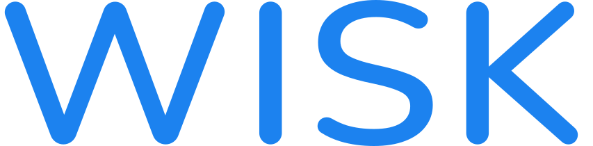
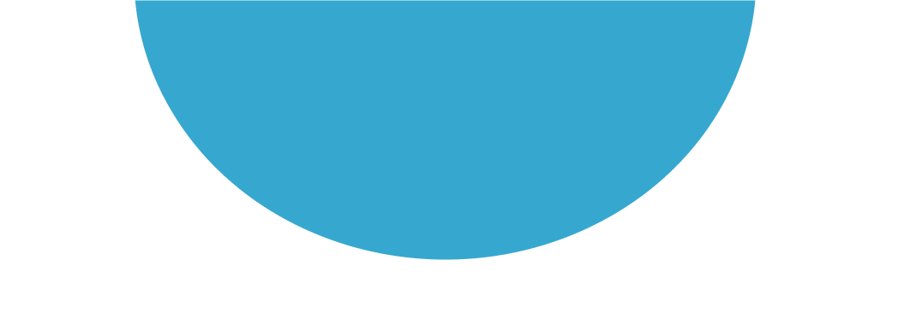

Hi, I’m Cam.
I’m a Sr. Product Designer with a background in UX research and front-end development, who strives to create simple solutions for complex products.
This is some of my work! ⬇
Mellomanic, where my passion for music and product came together.

Medal.tv, Where I blended my love for videogames & design to improve the experience of millions of daily users.

WISK, where I found my love for giant systems with complex data management needs.
Torre, where my UX Research and Design skills helped people find their dream job.

Freelance Projects, where I focused on providing bespoke holistic to pre-seed and early-stage startups.
But... Who am I? Over the past 9 years, my focus has been creating simple-to-use solutions to complex design problems. Find more in my CV/Resume here!
I highly value clear and honest communication at work, and believe that is the key for any team to succeed.
When I'm not working, I'm usually making music 🎸, playing videogames 🎮, or traveling 🗺️.
Let's work together!
I’m currently interested in on-site positions in the US (preferably NY or NJ), Ireland, England, or remote positions, part or full time. You can contact me via email.
© Riedel Solutions, 2025